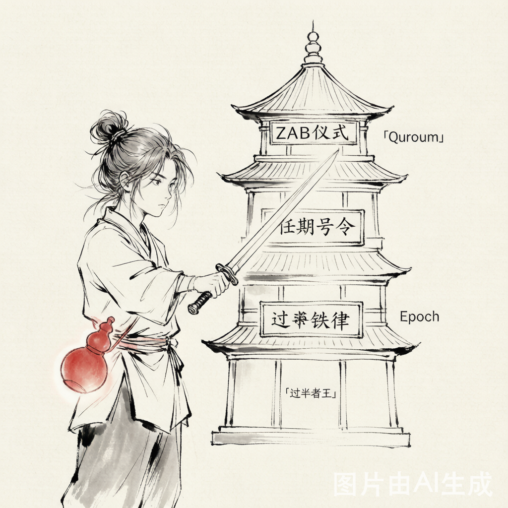

你坐镇中军帐，麾下五路兵马。忽然大雾弥漫，通讯断绝——两路兵马以为你是主帅，三路兵马也以为自己是主力。两边同时下令出击，于是数据开始在两个"主脑"的指挥下各自写入、各自覆盖。等你回过神来，账本已经裂成了两份不同的账本。这就是脑裂。
脑裂就像一支军队突然有了两个总司令——左边的命令"冲锋"，右边的命令"撤退"，士兵们不知道该听谁的，最终队伍就散了。
为什么初学者一听就懵？"脑裂"这个词本身就自带恐惧——让人脑补出"集群精神分裂"的画面。但说实话，这个比喻很精准：脑裂不是技术bug，是分布式系统的物理定律。只要有网络分区，任何不设防的集群都可能脑裂。
为什么上手就卡住？大部分人被劝退是因为这道题的答案挂在三个地方：Quorum 过半机制、Epoch 任期号、ZAB 协议。三样东西看起来像三个独立知识，但它们是同一把锁的三道保险——必须一起理解。
真正的 Boss 是谁？不是代码，是"网络分区"这个物理现实。你写的代码再好，光纤一断、交换机一瘫，集群说裂就裂。ZooKeeper 的牛逼不在它"防止脑裂发生"——脑裂防不住——而在它保证脑裂发生时数据不乱。
⚔ 征服者档案
🔸 前置技能：知道啥是 Leader/Follower、知道 TCP 连接会断、知道选举是啥意思
🔸 攻克耗时：读完这篇 10 分钟，你就能跟面试官讲清楚脑裂怎么解决
🔸 不用先学会：不需要会写 ZooKeeper 源码，不需要背 ZAB 协议细节——只要理解 Quorum + Epoch 这六个字就够了
第一块垫脚石：脑裂的根本原因是 "我不知道你还活着没"。网络一断，A 群不知道 B 群是不是死了，于是自立门户。解决方法的核心思想只有一个：任何决策，都必须得到超过一半的人点头。数学上不可能存在两个"超过一半"——这就是 ZooKeeper 一剑封喉的杀招。
先说最坏情况——你这辈子都不会遇到脑裂吗？只要你的系统超过一台机器、有 Leader 选举、网络有波动的可能性，脑裂就是迟早的事。不设防的集群在脑裂发生时：
⚔ 第一重功力：你终于能说清楚为什么 3 节点集群挂 1 台还能活、挂 2 台就瘫——不是 bug，是 Quorum 的铁律：N 节点宕机超过一半，剩下的凑不齐法定人数，主动拒绝服务。宁死不当伪军。
🛡 第二重功力：你不再害怕"网络分区后怎么办"——因为你知道 ZooKeeper 的设计哲学是 "宁可不可用，也不允许数据不一致"。这句话值千金。
⚡ 第三重功力：你开始能把"过半选举""Epoch 任期""ZXID 事务号"这三件事串成一条线——它们不是三个知识点，是一条链上的三个环。

ZooKeeper 防脑裂不是一招，是三道保险叠加。三道全过才能产生双主——数学上证明三道全过的概率为零。
② Leader 广播 Proposal 给 Follower
③ Follower 写日志 → 回 ACK
④ Leader 收到 过半 ACK → 自己 Commit → 广播 Commit
⑤ Follower 收到 Commit → 应用到内存
⑥ 如果步骤④没凑够过半 ACK（说明 Leader 自己才是少数派了！）→ 事务失败 → Leader 自觉退位
🗡 征服者证书——你现在可以理直气壮地：
- ✅ 向面试官解释"脑裂怎么解决"从 Quorum 过半 → Epoch 任期 → ZAB 流程，三层递进，不再是背八股文
- ✅ 设计一个不会脑裂的分布式系统奇数节点 + 过半决策 + 任期号，这套模板可以直接搬到 Raft/Etcd/Consul
- ✅ 在生产故障时快速定位看到 Mode: leader 同时出现在多个节点 → 秒知脑裂，不用翻半小时日志
- ✅ 在简历上写"深入理解分布式共识机制"而你确实懂了，不是靠背的
⚔ 征服者箴言
🔸 "Quorum + Epoch 这六个字，足够应付 90% 的分布式脑裂面试。" 剩下的 10%——等你真正在生产环境配过一个 5 节点集群，踩过一次网络分区，自然就懂了。
🔸 "分布式世界没有绝对防得住的事，只有'发生后怎么兜底'。" 脑裂不是"会不会发生"的问题，是"发生时你有没有三道锁"。
🔸 "ZooKeeper 不是为了防脑裂而生的，它是为了在脑裂中当裁判而生的。" 它的 CP 身份注定了它必须选择"宁可死、不分裂"，而正是这个选择，让所有依赖它的分布式系统敢放心地把仲裁权交给它。
如果朋友明天要开始攻克 ZooKeeper 脑裂，我只说三句话：
① 不需要看懂 ZAB 源码。 先搞懂"过半+任期号"这六个字，剩下的是细节。
② 画图，别背文字。 5 个圈→裂成 3+2→只有 3 能投票→Epoch 从 5 变 6→旧 Leader 被拒绝。一张图比十页笔记管用。
③ 面试官要的不是标准答案，是你画那张图的眼神。
- ZooKeeper 官方文档·zookeeper.apache.org
- 犬小哈教程·ZooKeeper 脑裂解决方案
- 腾讯云开发者社区·脑裂场景深度解析
- ZAB 论文·Yahoo! Research 2011
 扫码关注 · 每日一招
扫码关注 · 每日一招